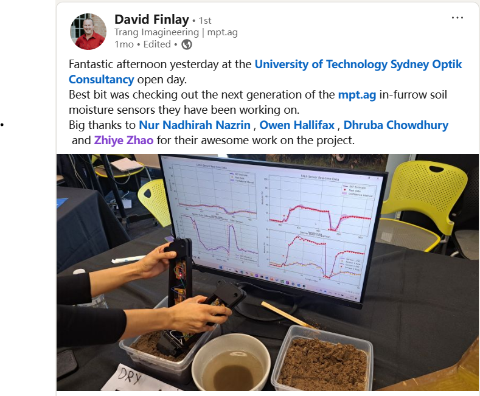

Soil Moisture Estimation via EKF-Based Multi-Sensor Fusion
Project Goal
Developed for use in MPT AgTech's autonomous seeding platform, this soil moisture sensing module leverages EKF-based sensor fusion to deliver stable and accurate moisture estimates in real time, even under environmental noise and hardware limitations.
Demonstration
The video below illustrates the real-time performance of an EKF-based soil moisture estimation algorithm developed independently for MPT AgTech's autonomous seeding vehicle. The algorithm filters noisy sensor data to produce smooth and reliable moisture readings, suitable for deployment in dynamic agricultural environments.
The project received high recognition from MPT AgTech for its robustness, accuracy, and seamless integration. The EKF filtering pipeline was designed and implemented entirely by me, with emphasis on environmental adaptability and signal stability in real-world field deployment.
Methods
- ✓ Designed and implemented a real-time soil moisture estimation algorithm based on the Extended Kalman Filter (EKF)
- ✓ Integrated multiple sensor data streams to enhance signal stability and estimation accuracy
- ✓ Tuned filter parameters to handle environmental noise and non-ideal hardware conditions